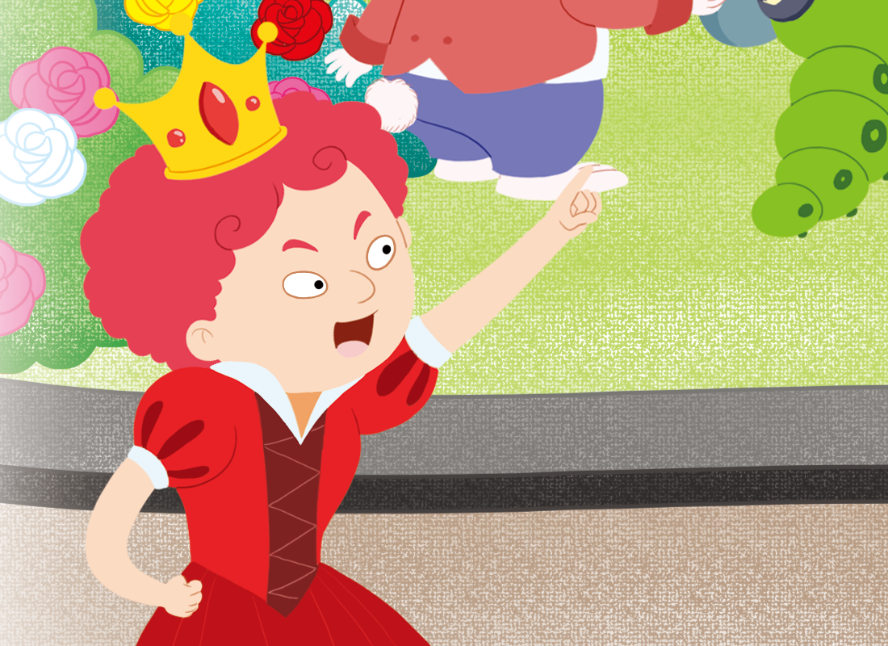

- 문제
- 계획
- 실행
- 반성
-
임금과 백성이 세금 계산 방법에 대해 각자 원하는 것은 무엇인가요?
임금은 첫해에는 금화 1개, 7년째에는 금화 12개보다 많이 내도록 하고 싶어 합니다.백성들은 세금을 덜 내고 싶어 합니다. -
어떤 방법으로 문제를 해결할지 이야기해 보세요.
왕비의 세금 계산 방법에 따라 세금표를 만들고 앨리스의 표와 비교합니다.앨리스가 만든 세금표의 규칙을 찾아 7년째 내야 할 세금이 얼마인지 구합니다. -
-
왕비의 세금 계산 방법에 따라 빈칸에 알맞은 수를 써넣으세요.
그렇다면 한 해가
지날 때마다
두 배가 되도록 세금
을 계산하면 돼요.1년째 2년째 3년째 4년째 5년째 6년째 7년째 금화(개) 1248163264 -
앨리스가 만든 세금표를 보고 규칙을 찾아보세요.
하지만 이렇게
세금을 계산할 수도
있어요.1년째 2년째 3년째 4년째 5년째 ··· 금화(개) 1 1 2 3 5 ··· 앞의 두 해의 세금을 더한 값이 그 해의 세금이 됩니다. -
앨리스의 세금 계산 방법에 따라 7년째에 내는 세금은 금화 몇 개인가요?
1년째 2년째 3년째 4년째 5년째 ··· 금화(개) 1 1 2 3 5 ··· 6년째 세금은 3＋5＝8이므로 금화 8개입니다.
7년째 세금은 5＋8＝13이므로 금화 13개입니다.
-
-
-
왕비와 앨리스의 세금 계산 방법을 비교하여 누구의 방법이 임금과 백성을 모두 만족하게 하는지 이야기해 보세요.
왕비의 세금 계산 방법1년째 2년째 3년째 4년째 5년째 6년째 7년째 금화(개) 1 2 4 8 16 32 64 앨리스의 세금 계산 방법1년째 2년째 3년째 4년째 5년째 6년째 7년째 금화(개) 1 1 2 3 5 8 13 -
왕비와 앨리스의 세금 계산 방법을 비교하여 누구의 방법이 임금과 백성을 모두 만족하게 하는지 이야기해 보세요.
-